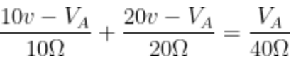
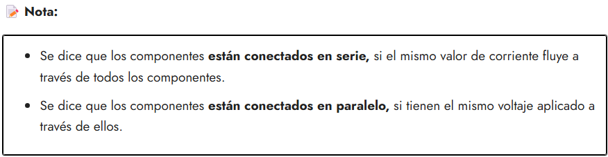

Ejercicios Resueltos
Primera Ley de Kirchhoff – Ley de Corrientes (LCK)
Recuerda: La primera Ley de Kirchhoff también conocida como una de las Leyes de la conservación de la carga, nos advierte que "la suma algebraica de todas las corrientes que entran y salen de un nodo deben ser igual a cero"
Es decir:

Para entenderlo mejor, veamos la siguiente imagen:
Aquí podemos observar claramente que las tres corrientes que ingresan al nodo son todas de valor positivo, y las dos corrientes que salen del nodo, poseen un valor negativo. Eso significa que podemos reescribir la ecuación mediante la siguiente manera:
- Solución:
Paso 1: Al analizar el circuito, debemos considerar que el único nodo de referencia es sin duda el nodo A, aunque muchos autores suelen nombrar los nodos con números u otras variables, nosotros le colocaremos la letra A, ahora debemos analizar que corrientes entran por ese nodo. Y vemos que:
Entra la corriente 1, y corriente 2, y finalmente sale la corriente 3.
Paso 2: Como sabemos que la corriente es igual a la diferencia de potencial entre la resistencia (I = V/R) "Ley del Ohm", entonces podemos hacer nuestro siguiente análisis:
- La diferencia de potencial va desde la fuente hasta el nodo A, y entre ella solo se interpone la resistencia de 10Ω, por lo que nuestra corriente 1, es equivalente a:
- Por otro lado la corriente 2, va desde la fuente hasta el nodo A, y entre ellas solo se interpone 20Ω, por lo que nuestra corriente 2, es equivalente a:

- Finalmente la corriente 3, va desde el nodo A hasta el punto de abajo que consideraremos como tierra o referencia, por lo que lo único que interviene es una resistencia de 40Ω, quedando así:
Paso 3: Ahora es momento de unir la ecuación del paso 1, para formar una sola ecuación.

- En la ecuación podemos encontrar el valor de voltaje en el nodo A, para ello solamente debemos multiplicar toda la ecuación por 40, para reducir los denominadores "mínimo común múltiplo".
- Simplificando.
- Volvemos a multiplicar.
- Ordenando las variables.
- Sumando o restando respectivamente.
- Despejando a nuestro Voltaje en el Nodo A
- Por lo que el Voltaje en A = 11.43 v
Paso 4: Como sabemos que la corriente 3, es la razón entre el voltaje en A y la resistencia de 40Ω, entonces proseguimos a calcular la corriente:
:
- Por lo que la corriente 3 es de 0.2858 Amperes.
Segunda Ley de Kirchhoff - Ley de Voltajes (LVK)
A diferencia de la primera ley, la segunda Ley de Kirchhoff es una clara idea sobre la Conservación de la Energía , que estable que "el voltaje total alrededor de un circuito es igual a la suma de todas las caídas de voltaje dentro del mismo ciclo", explicada de otra forma tendremos que recurrir a la siguiente imagen:
Sin importar en que punto del ciclo iniciemos y respetando la misma dirección obtendremos el resultado que explica la ley de voltajes, a menudo se irá usando el término "Malla" , el término malla se refiere a un grupo de componentes como resistencias o fuentes, que están conectados entre dos nodos.

Al igual que el ejemplo anterior de la ley de corrientes, podemos resolver el mismo ejercicio aplicando el método de mallas, o más bien de la ley de voltajes de Kirchhof.
Solución: Al ser el mismo problema que en el ejemplo de nodos, en este caso tenemos que relacionar las caídas de voltajes en las resistencias, por lo que por ahora tenemos solamente 3 resistencias y 2 fuentes de voltaje. Recordar que tendremos que aplicar la Ley del Ohm donde sea necesario.
Paso 1: En nuestra primer malla tenemos una fuente de 10v y una corriente 1 que pasa por la resistencia R1, y también tenemos una resistencia R3 que pasan dos corrientes (1 y 2), esto nos da las pistas necesarias para elaborar nuestra primer ecuación:
Paso 2: Observemos que en este caso la malla 2, tenemos una fuente de 20v, también una resistencia R2 a la que le pasa una corriente 2, y posteriormente una resistencia R3 que le pasan dos corrientes (1 y 2), por lo que al elaborar nuestra ecuación tenemos:

Paso 3: Empezamos a simplificar nuestras ecuaciones, para obtener una simultánea que iremos despejando.
Reduciendo:
En este punto podemos aplicar cualquier método conocido para despejar a la corriente 1 o la corriente 2. Podemos aplicar el método de reducción:
- Método de Reducción: Aplicando el método de reducción, vamos a multiplicar la primera ecuación por 4 y la segunda ecuación por -5.
- Una vez realizadas las multiplicaciones, entonces tenemos:
- Sumando ambas ecuaciones tenemos:
- Invirtiendo la ecuación y despejando:

- Por lo que la Corriente I2 = 0.4286 Amperes
- Ahora, calculando la corriente 1: Que la podemos despejar desde cualquiera de las dos ecuaciones, en este caso elegimos:
- Despejando la corriente 1
Invirtiendo la ecuación:
- Asignando el valor de la corriente 2, que encontramos en los pasos más atrás.
- Ahora para encontrar la corriente 3 que son la suma de la corriente 1 y 2, tenemos que aplicar:
(Julián, 2022)